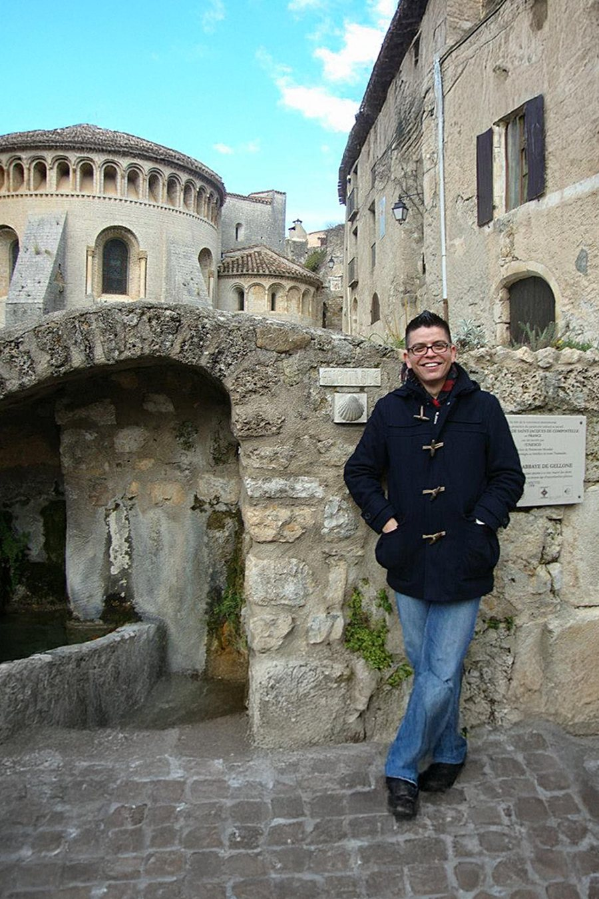

Design with a point of view—and a reason.
I’m Hector Osuna, a senior brand and digital designer working across identity, campaigns, web and visual systems. My approach combines visual craft with research, business context and systems thinking.
My practice
10+ years connecting brand expression with digital execution across enterprise B2B and consumer-facing work.
My toolkit
Figma, Adobe Creative Suite, After Effects and WordPress, supported by analytics and working knowledge of front-end code.
My next chapter
Seeking a full-time senior brand or digital design role. Based in DFW and open to relocation to San Francisco or Seattle.

A conversation in the south of France
Before any of this was a career, it was a trip. I spent time in Montpellier, France, learning the language and trying to actually live in the culture rather than just visit it — long dinners, slower mornings, a lot of getting lost on purpose in old stone streets like these.
I ended up cooking for a local art club gathering, and a conversation with a graphic designer there — about book design, of all things — is what planted the seed. I came home, enrolled at the Art Institute of Dallas, and that's the version of the story that actually led here.
"It wasn't just pretty pages; it was systems thinking in service of stories."
Read the full story ↗My approach
I believe strong design should feel clear before it feels clever. I start by understanding the audience, message and constraints, then build a visual language that can carry the idea consistently across channels.
My background spans brand identity, responsive web, digital campaigns, UI systems, presentations and marketing production. That range helps me see both the individual asset and the larger system it belongs to.
What I value
Typography, hierarchy, composition and detail matter.
Complex information should become easier to understand.
Good decisions should become reusable, not rediscovered.
Design should adapt without losing its core identity.
Art, food and the odd rabbit hole
Art appreciation & art history
I could spend an entire afternoon in a museum reading every wall label. Studying how painters and book designers solved composition, contrast and hierarchy centuries before "UI" was a word keeps showing up in how I think about layout and visual systems today — it's less a hobby than a second education.
Cooking, on camera
The same instinct that sent me chasing a conversation about book design in France also has me filming in my kitchen. I run a cooking channel — part recipe, part improvisation, part learning to be comfortable on camera.
Watch on YouTube ↗Thoughtful enough to feel timeless. Flexible enough to evolve.
I’m drawn to restrained, high-contrast visual systems, strong negative space and experiences where every element earns its place.